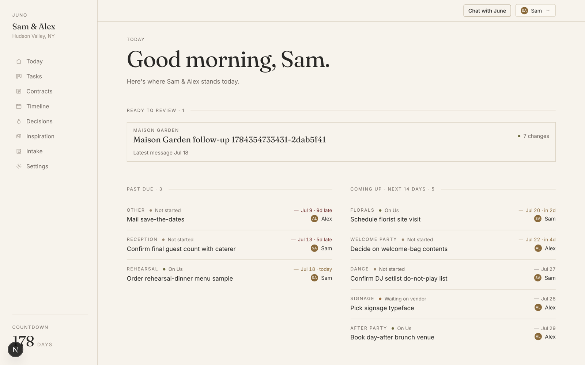
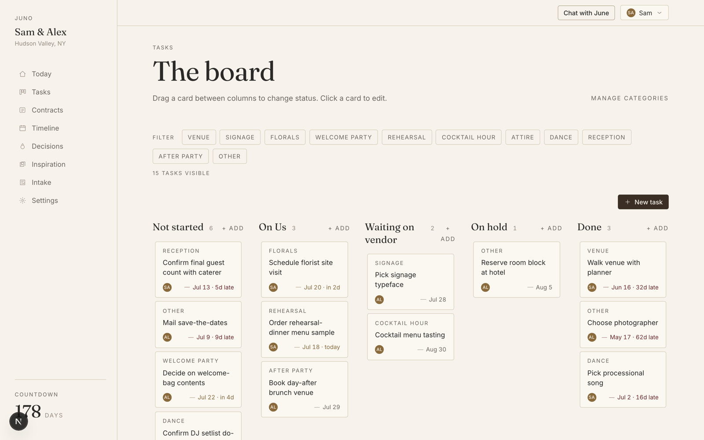
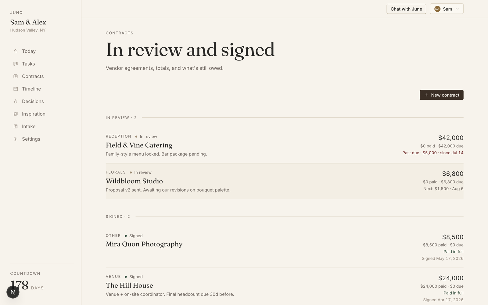
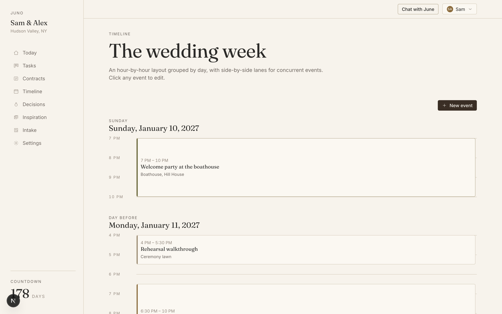
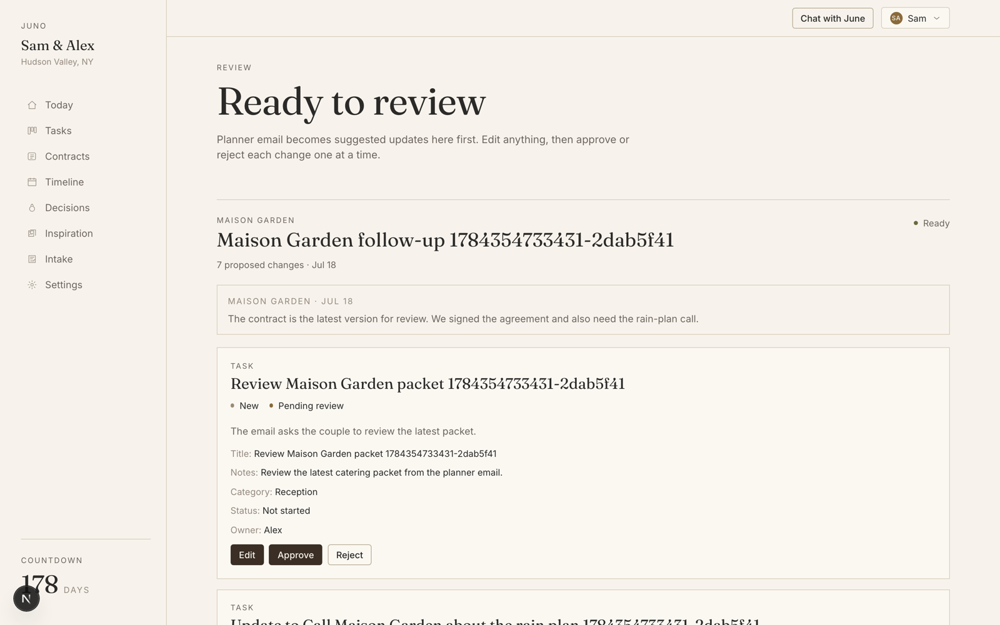
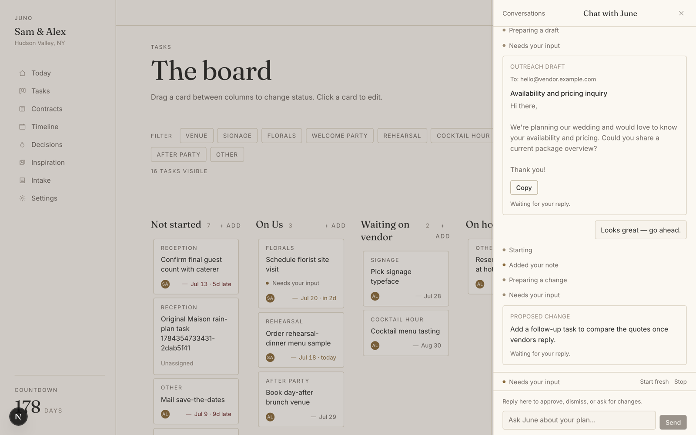

Juno: an AI wedding planner you can actually trust
An AI-agent product I built solo in about a month, and now use to run my own wedding. A case study in designing the trust boundaries that make an agent safe to hand real work to.
Deep dives: Evals instead of vibes · Building Juno with AI coding agents
While planning my own wedding, I kept hitting the same three problems every couple hits: there's no source of truth (decisions live across email threads, calls, contracts, and chat), the project-management overhead is enormous, and you've never done this before (you plan a wedding exactly once, with no way to know if you've covered everything).
Juno is my answer. Two names, one letter apart, so let me be precise. Juno is the product, a private planning studio for one couple. June is the planner who works inside it: an agent with her own inbox, her own voice, and deliberately limited powers. You forward vendor emails to June, upload contracts and proposals, and ask her to handle things. She reads everything, keeps the workspace current, and drafts outreach, but every change to your plan passes through your explicit approval.
The wedge is specific, because I lived it. We locked in the big, obvious vendor decisions (venue, caterer, photographer, florals) ourselves. At that point, hiring a human planner for thousands of dollars stops making sense. But that's exactly when the real work begins: months of small logistical and aesthetic decisions, dozens of vendor threads, none of it droppable, all of it living in email. A project that is high-stakes, email-centric, bounded in scope, and run by first-timers is close to an ideal shape for an agent, if the couple can trust it.

The product
The workspace covers the whole planning surface: a kanban board for tasks, contracts with payment schedules, an hour-by-hour wedding-week timeline, a decision log, and inspiration boards. Two deliberate product choices shape all of it:
- Low AI visibility. Juno never brands itself as "AI" or a "copilot." June is a wedding-planner persona; features feel like drafting, organizing, and matching. The design language follows: ivory and stone surfaces, serif display type, hairline borders. A design studio, not a SaaS dashboard with purple gradients.
- The couple stays in control. Nothing writes itself into the plan. Ingested email becomes proposals; June's actions become cards you approve. The agent does the legwork; the couple makes the calls.



Email in, reviewed changes out
The core insight: the source of truth already exists. It's just trapped in vendor email. So each workspace gets its own planner email address. Forward a vendor thread (or just CC June), and an ingestion pipeline turns it into structured, reviewable changes:
The two-stage LLM pipeline (extract, then reconcile) is shared by email and uploaded documents. Reconcile sees the whole batch alongside existing data, so a new email can update an existing proposal in place or supersede one that a newer fact made obsolete, instead of piling up duplicates.

Two design details here I'm particularly happy with:
- LLM output gets a deterministic backstop. Before anything persists, a plain-code filter rejects operations the model shouldn't be able to make, like a stale email walking a signed contract back to "in review," or reopening a completed task. The model proposes; deterministic code enforces the invariants.
- Email admission is deterministic, not inferred. Only a confirmed sender or an already-admitted thread can get mail into the workspace. The model never decides routing. Everything ambiguous lands in an operator-only quarantine, invisible to the couple and to the agent.
Why June has her own inbox
One design decision I find most interesting: June doesn't touch the couple's email at all.
Each workspace gets its own inbox, a real address like june-…@agentmail.to,
that the couple forwards or CCs vendor threads to. Everything June reads arrives there; only
mail from senders the couple has confirmed (or replies on threads June is already part of)
gets in, and with an explicit opt-in, an approved outreach draft actually sends from
June's address, in June's voice, with both partners CC'd. Vendors just reply to June,
and the loop continues.
The obvious alternatives were OAuth into the couple's Gmail to read it, or sending on their behalf from their own address. I chose the separate inbox deliberately:
- Access should be proportional to the job. Wedding planning needs maybe a few dozen vendor threads; inbox access grants years of financial, medical, and personal history. Asking for that much trust for that narrow a goal is bad product design, and a forwarding address means the couple decides, thread by thread, what the agent ever sees.
- It's OK for an AI to sound like an AI, as long as it isn't wearing your name. If June sends from her own address, an occasional stiff sentence or awkward choice is fine: everyone can see it's a third party assisting, not the couple. People already burn real effort making their email sound good and human; handing the correspondence to a visibly separate persona lifts that burden entirely. Sending the same words from the couple's own address would put their reputation behind every sentence, which would demand near-perfection from the model and forgive nothing.
- It mirrors how working with a real planner already works. Vendors are used to "hi, I'm coordinating on behalf of the couple." A planner with her own email address is a familiar social pattern, not a new behavior anyone has to learn. That lowers the barrier on both sides of the conversation.
- It bounds the agent's context. A dedicated inbox means everything in it is, by construction, wedding-relevant: no filtering a lifetime of mail to find the signal, no token budget spent on noise, and no risk of the model getting confused (or influenced) by unrelated correspondence. The context problem largely disappears when the mailbox itself is the boundary.
This is the design decision production has validated most clearly. I expected getting vendors to correspond with an AI to be the awkward part; instead, they simply started replying to June directly, the way they would to any coordinator. The persona and the dedicated address did the work: no explanation needed, no behavior to teach.
June: an agent with a structural firewall
Every chat conversation, a quick question or "handle this task for me," runs on one background engine. June can read the whole workspace, read ingested email and parsed documents, and search the web. When she needs something from you, the run pauses: a question, an email draft, or a proposed workspace change becomes a card in the conversation, and the run resumes only when you answer, approve, revise, or dismiss it.

The safety model is the part I'd defend in any design review: the capability firewall is structural, not prompted. There is no send-email tool and no payment tool anywhere in the agent's tool registry. It isn't "the prompt says don't," it's that the capability does not exist. The workspace has 70 server actions; only 57 are registered as agent tools, and the gap is deliberate: sends, uploads, invites, and review-queue approvals are user-only. Sending an approved email happens as a user action at the approval seam (idempotent via a unique per-draft send claim, so double-clicking Approve can't double-send). A unit test pins the allowlist so a future refactor can't quietly hand the model send authority.
A few more agent-engineering details under the hood:
- Conversations survive runs. A follow-up message carries the previous run's full transcript forward (tool results, drafts, approvals) with dangling tool-calls repaired and a character-budget trim that blanks old tool results without breaking the transcript structure. June remembers what she found; she doesn't start over.
- Mid-run steering. Messages sent while June is working are injected at the next loop boundary, so you can redirect her without killing the run.
- UI and agent share one mutation surface. Every server action (Zod-validated, audit-logged) is also registered as an agent tool with its schema derived from the same Zod definition. There's no separate "agent API" to drift out of sync.
What I cut
A month of solo scope means saying no to things that would appear in any competitor's feature matrix. The clearest cut was budget tracking. Every wedding tool has a budget module; I skipped it. Contract payment schedules already answer the money questions that actually bite (what's owed, to whom, by when) as a side effect of data the pipeline extracts anyway. A full budgeting product (envelopes, forecasts, category rollups) is a different product, and building a mediocre version of it would have taken weeks away from the thing only Juno does: turning vendor email into a plan you can trust. Depth on the coordination loop beat breadth on the checklist.
Running my own wedding on it
Juno isn't a demo I built and moved on from. It's how my wedding is actually being planned. Every vendor thread now includes June. At any given time the board holds roughly thirty live tasks in equal thirds: about ten in the backlog, ten waiting on us, and ten waiting on vendors. The couple-side work is executing on a vision, a stream of logistical and aesthetic decisions, and keeping track of all of it is exactly the job Juno was built for.
How do I know if it's working? The metric I watch is tasks completed by June, and how many days a task sits in progress. So much of a wedding is locking in details sooner: every early decision returns time to the couple and surfaces downstream risks while they're still cheap. And the metric is honest by construction: nothing forces a couple to route work through June. They can complete any task themselves, so if June is completing tasks, it's because she earned them.
Two lessons from production that no amount of building in private would have taught me:
- The hardest model problem is editorial, not extractive. June's biggest struggle isn't parsing a payment schedule out of an email. It's judging which of the hundred small facts flowing past is a decision worth logging and making visible. I couldn't define that judgment in a vacuum, and neither could an eval suite written ahead of time. So the eval dataset grows from real life: when June gets it wrong, I flag the run in the UI and it becomes a test case.
- Agent costs compound quietly. I started on Claude Sonnet and Opus with a deliberate bias: get the product functional as fast as possible, optimize spend later. Later arrived quickly. I've since introduced a model router so I can experiment with different models per task, routing cheap, structured work away from frontier models without touching the surfaces where judgment matters. That's a future article of its own.
Evals instead of vibes
An agent product lives or dies on quality you can't see in a demo: does the extraction pipeline catch the payment schedule buried in an email? Does June answer from the workspace's actual data, or does she make something up? Both LLM surfaces have eval harnesses (22 golden fixtures for the ingestion pipeline, 21 scenario fixtures across 7 suites for the agent) built on a few opinionated principles: evaluate the production code path rather than a copy of it, score deterministically first and use an LLM judge only for the genuinely fuzzy residue, diff every run against a committed baseline instead of gaming a pass/fail threshold, and keep evals deliberately separate from CI. The full reasoning is in Evals instead of vibes.
How it was built
Juno is a solo project, built in about a month alongside actually planning the wedding, and it's also my testbed for AI-native development. I ran a spec-driven workflow with AI coding agents (Claude Code and Codex): each feature goes roadmap → spec → plan → task list → implementation, with the repo's conventions and invariants maintained in an agents-facing architecture document that keeps every session grounded. Four quality gates (lint, typecheck, unit tests, production build) plus a 36-test Playwright e2e suite against real auth and RLS run on every PR. What worked, what broke, and what it taught me about building with agent teams is in its own write-up.